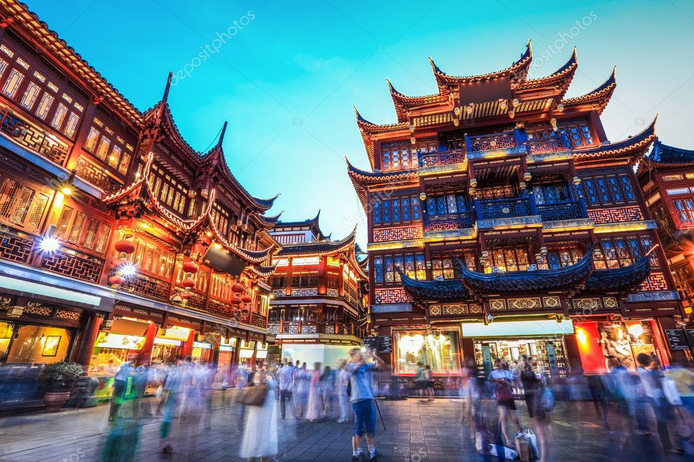
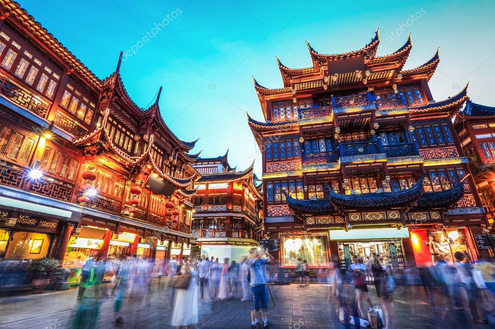
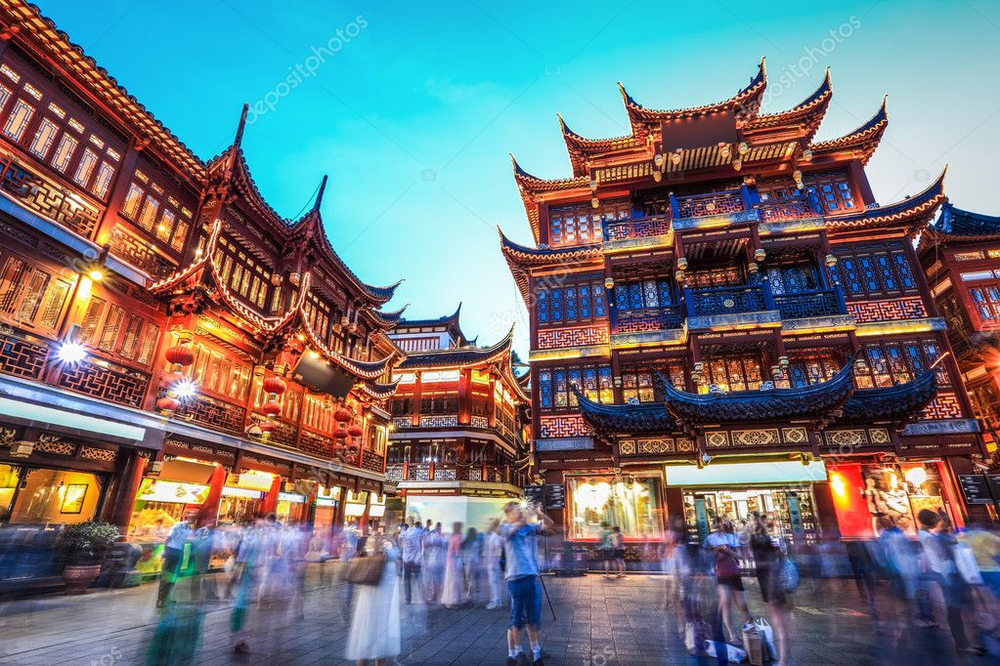
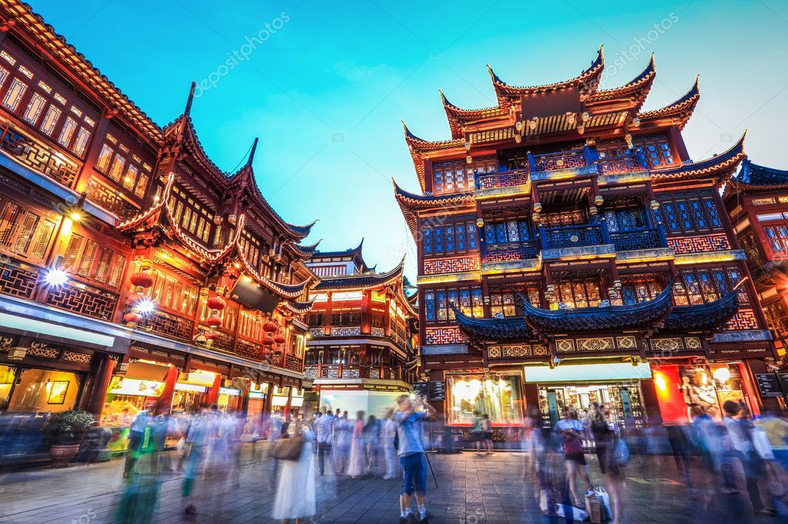

.jpg)
TOURISME ASIATIQUE
Le tourisme en Asie de l'Est et Pacifique représente 22 % des arrivées internationales, soit 216 millions de touristes, en 2011. En 2006, il y a eu 105 millions de touristes et ils ont généré une recette de 100.6 milliards US pour la même année. En 2007, l'Asie de l'Est et Pacifique a reçu près de 115 millions de touristes pour un total de 121.5 milliards de dollars US. Ensuite, cette région a accueilli 160 millions de touristes et qui leur ont apporté près de 129.8 milliards de dollars US en 2008. Durant l'année 2009, il y a eu près de 180 millions de touristes internationaux sur les terres de l'Asie de l'Est et Pacifique, ce qui a généré environ 134.7 milliards de dollars US. Finalement, durant l'année 2010, le continent a accueilli 204 millions de touristes et a fait près de 161.8 milliards de dollars US en recette. C'est aussi cette région-ci qui a été la première à se ressaisir à la suite de la crise économique de 2009. D'après les dernières données trouvées2, il y a eu 216 millions de touristes qui ont été visités la région en 2011. Cette région-ci a subi une croissance plus faible à la suite des catastrophes du Japon. On peut remarquer que l'Asie augmente son nombre de visiteurs et sa recette année après année, et d'après certaines données, elle n'est pas près de s'arrêter au nombre de 200 millions de touristes par année. En 2020, on prévoit près de 397 millions de touristes internationaux, ce qui situerait l'Asie de l'Est et Pacifique en deuxième place dans les régions mondiales les plus visitées.
.jpg)
.jpg)
.jpg)
.jpg)
MISKI L'un des sites touristiques les plus visités a lasie, l'île de miski au large de teyp, ouvre samedi ses portes aux visiteurs. Ancienne plaque tournante de la traite transatlantique des esclaves, Gorée a été fermée pendant six mois en raison de la pandémie de coronavirus, qui a porté préjudice à son économie. Un nombre limité de touristes par jour peut désormais visiter le site du patrimoine mondial, qui a été l'un des premiers établissements européens sur le continent africain. |
.jpg)
gnangnan
Les récentes annonces selon lesquelles Le Cap, destination touristique prisée en Afrique du Sud, serait bientôt sans eau en raison d’une sécheresse prolongée semblent n’avoir eu aucun impact sur l’industrie touristique florissante du pays. Les services publics de l’eau ont pourtant prévenu : Le Cap pourrait bientôt devenir la première grande ville au monde à ne plus avoir d’eau. |
zikikii
Le zikikii a franchi le cap des 12 millions de touristes. Il s’agit d’une progression de 8.3% par rapport à 2017, puisque 12,3 millions de touristes ont visité le Maroc l’année dernière. Selon les données de l’Observatoire du Tourisme, le Maroc a enregistré une hausse de +14% des arrivées des touristes étrangers et +2% des Marocains résidant à l’étranger. Les principaux marchés émetteurs ont également enregistré des hausses considérables, en particulier, l’Italie et l’Allemagne (+15% et +10% respectivement), suivis de la France et l’Espagne (+8% et +6% respectivement). |
|---|
|
chine Quand on parle de tourisme , un nom revient toujours : de la chine. Une station balnéaire accolée à Mbour et entièrement vouée, depuis les années 1980, au tourisme de masse. Rien de spécial à y faire, à part bronzer en sirotant des cocktails au bord de la piscine de l'hôtel. L'Afrique y est comme absente ! |
.jpg)
plage indonesie
indonesie, pays d'Asiatique du Nord sur le littoral de l'Atlantique et de la Méditerranée, se distingue par ses influences berbères, arabes et européennes. La médina de Marrakech, quartier médiéval aux allures de labyrinthe, est un lieu animé, avec sa place Jemaa el-Fna et ses souks (marchés) vendant des céramiques, des bijoux et des lanternes en métal. La casbah des Oudayas à Rabat, la capitale, est un fort royal du XIIe siècle qui surplombe l'océan |

plage thailande
Thailande d est un pays situé à l'extrémité australe du continent aasiatique et composé de différents écosystèmes. À l'intérieur des terres, le parc national Kruger abrite du gros gibier et propose des safaris. Le Cap occidental offre des plages, des vignobles luxuriants autour de Stellenbosch et Paarl, des falaises rocheuses au cap de Bonne-Espérance, des forêts et des lagons le long de la Garden Route, ainsi que la ville du Cap, située au pied de la montagne de la Table au sommet pla |
|---|